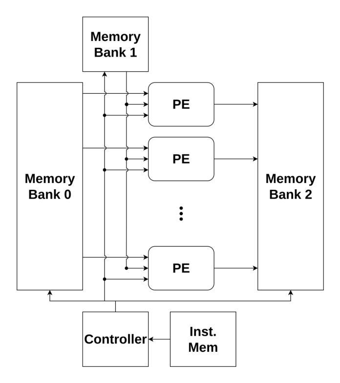
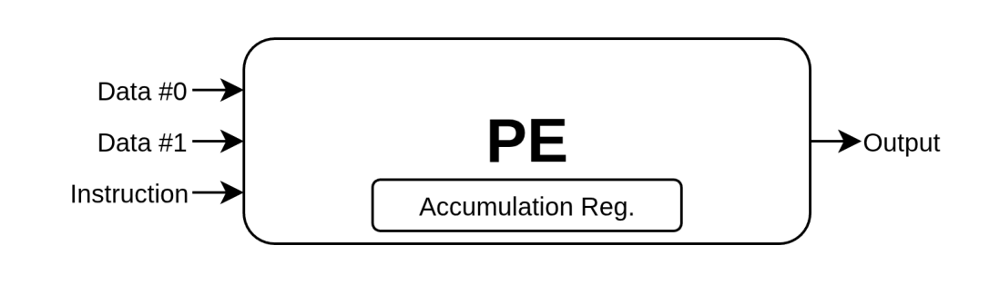
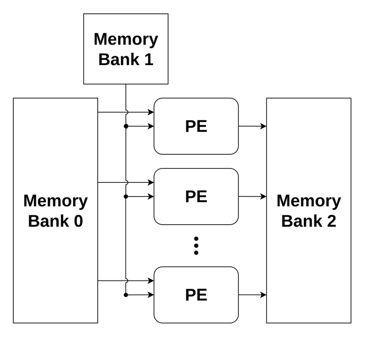

Getting oriented in Part 1
By the end you'll have run the tests, read the starter code with a map, practiced the bit tricks the spec takes for granted, and know how you and your partner will work and submit. It takes about 90 minutes and splits well into sittings. Every step ends with something you run.
- Due Fri Nov 13, 11:59 PM · no extensions
- Spec: handouts/Project_Part_1.pdf
- Checklist:
docs/spec-notes.md
1 The machine in one picture 10 min
Part 1 is a simulator: a Python program that behaves exactly like the chip you'll build in Part 2. You are not writing a matrix multiply. You're writing the pieces of a machine, and the provided compiler programs that machine to do the multiply. In Part 2 your SystemVerilog has to match this Python bit for bit, so whatever you build now becomes your reference.



- Processing element (PE)
- One small calculator. It takes two 32-bit inputs and an instruction. It keeps a running total in its
accumulation register (the "accumulator") and has an output register holding whatever
it last chose to output. File:
processing_element.py. - MEM0, MEM1, MEM2 (the "main buffer")
- MEM0 holds the matrix, with one 32-bit word per PE in every entry. MEM1 holds the vector: each read
produces one word that goes to every PE (a broadcast). MEM2 stores the results.
The code calls the three together the main buffer. File:
main_buffer.py. - Controller
- Takes each instruction and runs it Count + 1 times, adding fixed increments to the memory addresses
each time. It's a loop built into the hardware. File:
accelerator.py. - SIMD (Single Instruction, Multiple Data)
- On every step all PEs get the same instruction, but each works on different data from MEM0.
- Mode and lanes
- A 32-bit word can be read as one 32-bit number, two 16-bit numbers, or four 8-bit numbers. Each sub-number is a lane. The mode (INT8, INT16 or INT32) says which reading to use. In INT8 mode one PE does four multiplies at once.
How it computes y = M·v
Each lane of each PE owns one row of M. On step c, every lane multiplies its row's entry
M[row][c] by the same v[c] and adds the product to its accumulator. That's why the MEM1 value is broadcast
to every PE and repeated into every lane: all rows need v[c] at the same moment. After the last column,
each accumulator lane holds one entry of y. OUT copies those into the output register, and
WRITE stores every PE's output into MEM2. When M has more rows than there are lanes, the
compiler repeats the whole sequence for the next block of rows.
2 Your toolbox 15 min
There are five tools. Everything is already installed and built on this Mac. Open a card when something confuses you.
Terminal and paths
~ means your home folder. Every command in this tutorial runs from the project root unless it says
otherwise, so start each session with:
cd ~/ee271-projectpwd prints where you are and ls lists what's here. A path like part1/src
(no leading / or ~) is relative to wherever you currently are.
conda environment: a private Python for this project
A conda environment is a folder with its own copy of Python and libraries, kept apart from the
rest of your computer. This one has Python 3.13.5, bitstring and numpy, at the
versions the staff pinned in part1/requirements.yml. It lives at
part1/ee271-conda-env/. Git ignores that folder, and each partner builds their own with
make setup.
The make commands use it automatically. To use it by hand (for example to follow the
handout or an Ed post):
conda activate ./part1/ee271-conda-env
which python # should end in part1/ee271-conda-env/bin/python
conda deactivate # when donemake: named shortcuts
A Makefile is a list of named commands. Plain make lists ours, and make test
runs one of them. Each test script exits with its number of failures, and make reports that as
Error 3. That means "3 tests failed", not that make itself broke.
git: snapshots and sharing
Git keeps commits: snapshots of the whole folder, each with a message. This folder is already a
repo. Its history is the empty start, then the staff starter code imported into part1/, then
this setup. Day to day you'll use:
git status # what changed, which branch
git diff # the exact lines you changed
git add -A && git commit -m "PE: MAC for INT32" # save a snapshot
git log --oneline -10 # recent historypart1/ is a copy of the staff's repo, and make update-starter pulls in any fixes they push.
Working with your partner is covered in step 6.
Editor: VS Code or Cursor
code ~/ee271-project # or: cursor ~/ee271-projectThe repo ships settings, so the editor uses the conda Python and can find src. If the status bar shows
a different Python, press Cmd+Shift+P, choose "Python: Select Interpreter" and pick the one
inside part1/ee271-conda-env. Debugging is in step 5.
cd ~/ee271-project
make
make testA list of shortcuts, then 3 test files' results: 16 failures and 3 "passed" lines, all of them the CLR tests. They pass only because an empty PE outputs zeros, and zero is what CLR should produce. So a passing test is evidence, not proof. Staff also grade with private tests using other values and sequences.
The official way (what the handout and Ed posts assume)
These still work, because part1/ keeps the staff layout exactly:
cd ~/ee271-project/part1
conda activate ./ee271-conda-env
cd test && make run_tests
cd .. && make generate_submissionSkip the handout's kinit, aklog, tcsh and load_modules.sh lines. They're
for the caddy cluster, which is down anyway, and staff said to do Part 1 locally (Ed #219).
3 Read the starter code with a map 20 min
matrix M, vector v ──► compiler.py ──► memory images (MEM0, MEM1) + assembly text
assembly text ───────► assembler.py ─► Instruction objects (instruction.py)
Instruction objects ─► accelerator.py ─► main_buffer.py + processing_element.py × PE_COUNT
the tests: build a config → compile → assemble → run your code → compare with numpyBold files are yours. Read the others in this order.
1. instruction.py (skim, 5 min)
An instruction is a fixed-width string of bits split into fields. Each class stores the bits and
has get_…() methods that return one field as a Bits slice. Add .uint to get a Python int.
Fields are listed left to right, most significant first.
- PE opcodes come in two levels. An opcode field of
0(namedNO_VALUE) means "look in the Value field": MAC=0, NOP=1, OUT=2, PASS=3, CLR=4. An opcode field of1is RND, and then Value is the shift amount s. That's whyPEI.MACandPEI.NO_VALUEare both 0, andPEI.NOPandPEI.RNDare both 1. - Mode is stored as a code: 0 = INT8, 1 = INT16, 2 = INT32.
Mode.bitwidth(code)converts it, andget_mode_bitwidth()on a PE instruction does that for you.
2. assembler.py (skim, 3 min)
Turns text like READ INT16 0 0 | MAC INT16 | 3 1 1 into an Instruction. The three parts
separated by | are the memory op, the PE op, and "count incA incB". It stores count − 1,
which is why the controller runs the instruction Count + 1 times.
3. compiler.py: run it, don't read it
make tour shows its output on a problem small enough to read.
4. One test (3 min)
Open part1/test/test_processing_element.py and read test_mac_int32. Every test follows the same
pattern: build a configuration, construct your class, feed it inputs, run a few assembled instructions, and
compare the result with an answer worked out by hand. Predict the expected output before you read it.
5. Your three files
Look for # START IMPLEMENTATION … # Your Code Here … # END IMPLEMENTATION. Everything else in those
files is given (constructors, getters, setters). Read those parts, because they name the state you'll work with:
self._acc_value, self._output_value, self._mem0_output_port,
self._pe_array, and so on.
make tourSix sections: the math problem, the machine's sizes, what's in MEM0 and MEM1, the decoded program, what MEM2 should hold at the end, and your accelerator's result (all zeros for now).
Answer these from the output, and tick each one when you can explain it to your partner:
- In INT16 mode with 2 PEs, how many rows of M does one pass handle? Why that number?
- Find v[2] in MEM1: which address, which lane? MAC step c uses MemBOffset = c. What does that tell you about which offset bits choose the address and which choose the lane?
- Instruction [1] says count 3. What Count is stored, and which (A, B) offsets does each repetition use?
- Run
make tour ARGS="--mode INT8 --pes 1 --cols 6"and answer the v[c] question again for INT8. - In MEM0, row 0 of each block sits in the leftmost lane of word 0. In MEM2, y[0] is also leftmost. What does that suggest about which PE should read which 32-bit slice of the MEM0 word?
4 Bits and numbers the spec assumes 25 min
Python integers have no fixed size, but hardware registers do. Most of Part 1 is careful pretending that
Python numbers are exactly 8, 16, 32 or 64 wires wide. The starter does this with the bitstring
library's Bits type. Start a prompt with everything loaded, then type the lines after
>>>:
make repl4.1 One bit pattern, two readings
>>> x = Bits(int=-3, length=8)
>>> x.bin, x.hex
('11111101', 'fd')
>>> x.int, x.uint
(-3, 253)Bits stores only the 8 bits. .int reads them as signed (two's complement) and .uint
as unsigned. The spec says every lane is signed.
4.2 Two's complement in one rule
In w bits, the top bit is worth −2w−1 instead of +2w−1. That gives a range of −2w−1 to 2w−1−1, which is exactly the limits OUT clamps to.
| width | min | max |
|---|---|---|
| 8 | −128 | 127 |
| 16 | −32,768 | 32,767 |
| 32 | −2,147,483,648 | 2,147,483,647 |
4.3 Sign extension: making a number wider
To widen a signed number without changing its value, copy its sign bit into all the new top bits. Filling them with zeros instead (zero extension) only works for unsigned numbers.
>>> Bits(int=x.int, length=16).hex # sign-extended: still -3
'fffd'
>>> Bits(uint=x.uint, length=16).int # zero-extended: now 253, wrong for signed
253The spec has PASS sign-extend each input lane into its wider accumulator lane.
4.4 Lanes, packing, and which end is lane 0
>>> w = Bits().join([Bits(int=v, length=8) for v in [1, 2, 3, -4]])
>>> w.hex
'010203fc'
>>> [p.int for p in w.cut(8)]
[1, 2, 3, -4]
>>> w[-8:].int # the last 8 bits = the least significant lane
-40x01 = 1
0x02 = 2
0x03 = 3
0xfc = −4
join puts its first item in the most significant position, and cut hands pieces
back most significant first. The spec counts lanes from the least significant end (lane 0 here and in the
tour), so lane 0 is the last piece cut gives you.
Getting lane order backwards is the classic bug, and in some modes the public tests may not catch it.
Other operations you'll want: a + b concatenates (with a on the left), b * 4 repeats a
pattern 4 times, and len(b) is the width.
4.5 Bit-slice notation vs bitstring indexes
The handout writes MemBOffset[MSB:1] and MemBOffset[1:0]. That's hardware (Verilog) notation:
bit 0 is the least significant bit, and [hi:lo] includes both ends. For x = 13 = 0b1101:
| notation | bits | value | in words |
|---|---|---|---|
x[0] | 1 | 1 | lowest bit |
x[1:0] | 01 | 1 | lowest two bits |
x[MSB:1] | 110 | 6 | everything except the lowest bit |
x[MSB:2] | 11 | 3 | everything except the lowest two |
bitstring indexes run the other way: index 0 is the most significant (leftmost) bit.
>>> o = Bits(uint=13, length=4)
>>> o.bin
'1101'
>>> o[0], o[-1] # o[0] is the MSB here, not "bit 0"
(True, True)Both happen to be 1 here, which is exactly how this bug hides. It's often clearer to take .uint and use
integer math: dropping the lowest k bits is x >> k, and keeping only the lowest k bits is
x & (2**k - 1).
4.6 Too big for the box: clamp or wrap
>>> Bits(int=200, length=8)
ValueError: Value 200 does not fit in 8 signed bits.Bits refuses values that don't fit, so whenever a result might be too wide, you have to decide what
happens before building the Bits:
- Clamp (also called saturate): stick at the nearest limit. In 8 bits, 200 → 127 and −300 → −128. This is what OUT does.
- Wrap: keep only the low w bits, like a real adder does. In 8 bits, 127 + 1 → −128.
The spec says MAC "does not saturate". Agree with your partner on what that means for an accumulator lane that overflows, and write a test for it. If you do math on a whole packed word as one big integer, a carry out of one lane leaks into the next. That's why the spec says to do the arithmetic independently in each lane.
4.7 Dividing by 2s, rounding ties to even
RND divides each accumulator lane by 2s and rounds to the nearest integer. When the result is exactly halfway, it goes to the even neighbor ("banker's rounding"). With s = 2:
| lane | ÷ 4 | result |
|---|---|---|
| 9 | 2.25 | 2 |
| 11 | 2.75 | 3 |
| 10 | 2.5 (tie) | 2 (even) |
| 14 | 3.5 (tie) | 4 (even) |
| −10 | −2.5 (tie) | −2 (even) |
round()on floats already rounds ties to even:round(2.5) == 2andround(-2.5) == -2.- But a float holds only 53 bits exactly, and the accumulator is 64:
float(2**53 + 1) == 2**53isTrue. Integer-only math avoids this. //and>>round toward minus infinity, not toward zero:-7 // 2 == -4and-7 >> 1 == -4.
4.8 Bits can't be edited in place
>>> x[0] = 1
TypeError: 'Bits' object does not support item assignmentBuild a new Bits and assign it back to the attribute (for example self._acc_value = …).
== compares two Bits bit pattern by bit pattern, which is how the tests check you.
5 Change, test, debug 10 min
Suggested order: the PE (make test-pe) and the main buffer (make test-buffer) don't
depend on each other, so partners can split them. Then do the accelerator together (make test-accel, make tour).
Inside the PE, execute_instruction decodes the instruction and calls the right _handle_… method.
Three ways to see what your code is doing
- print:
print(f"{self._acc_value=}"). The=prints the name along with the value. Remove these before you submit. - The tour on tiny problems:
make tour ARGS="--rows 4 --cols 2 --trace"prints every PE's accumulator and output lanes after each instruction. - Breakpoints: in VS Code or Cursor, open
part1/src/processing_element.pyand click just left of a line number insideexecute_instructionto place a red dot. Open Run and Debug (Cmd+Shift+D), choose Test: processing element, and press F5. When it stops, the Variables pane showsselfandinstruction, and the Debug Console evaluates expressions likeinstruction.get_value().uint. F10 runs the next line, F11 steps into a call, F5 continues, and Shift+F5 stops.
Your own tests
part1/test/test_ours.py has small helpers (pack, run_pe, check) and one example built
straight from the spec. Run it with make test-ours, and grow it from the edge-case list in
docs/spec-notes.md. It isn't submitted, because the zip contains only src/.
Open the repo in your editor, set a breakpoint in execute_instruction, and run
Test: processing element under the debugger. Look at instruction.get_opcode().uint and
instruction.get_value().uint in the Debug Console for a couple of the test's instructions.
code ~/ee271-project6 Team, AI log, submit 10 min
Share the repo (once)
When your partner has a GitHub account:
scripts/share-on-github.sh <partner-github-username>This creates a private GitHub repo, pushes everything, and invites them. They then run
git clone …, make setup and make test (see README.md). Keep it private: the honor code
forbids letting other students see your code.
Work so you both understand everything
One of you takes the PE and the other the main buffer, then you write the accelerator together. Use a short branch
and a pull request for each piece so the other person reads every change. The oral quiz can ask either of you
about any line. The commands and how to handle conflicts are in docs/WORKFLOW.md.
Keep the AI log
AI is allowed on any part (Ed #207), but the final report needs a one-page reflection on how it went. Add a few lines
to docs/ai-log.md whenever an AI tool does something real.
Submit
make test # everything passes
make test-ours # and your own edge cases
make submit # builds part1/assignment1.zip and lists what's in itUpload part1/assignment1.zip to Gradescope and add your partner to the submission. The deadline is
Fri Nov 13, 11:59 PM PST, with no extensions because Part 2 builds on Part 1 (Ed #204). Late days still exist: per the
syllabus, a pair spends one from each partner per 24 hours.
Check Ed #212 for a staff answer to two open questions. (1) In one instruction with both WRITE and OUT, does WRITE store the old output or the new one? (2) Can a READ's MEM1 offset go out of range in INT32 mode?
Cheat sheet
| Command | What it does |
|---|---|
make setup | build the conda environment (once per machine) |
make test | all public tests. Single files: make test-pe, make test-buffer, make test-accel |
make test-ours | your extra tests in part1/test/test_ours.py |
make tour ARGS="--mode INT8 --trace" | tiny worked problem with PE state after each step. Also --rows --cols --pes --seed |
make repl | Python prompt with Bits, PEI, MI, Mode, Assembler loaded |
make submit | build part1/assignment1.zip |
make update-starter | pull staff fixes into part1/ (commit your work first) |
git status / git diff | what changed |
git add -A && git commit -m "…" | save a snapshot |
git pull / git push | get your partner's work / share yours |
| Bits | |
|---|---|
Bits(int=v, length=w), Bits(uint=v, length=w) | make a w-bit value (ValueError if it doesn't fit) |
.int / .uint / .bin / .hex / len(b) | read it back |
b.cut(w) | split into w-bit pieces, most significant first |
Bits().join([...]), a + b, b * n | pack (first item = most significant), concatenate, repeat |
b[i:j], b[-w:] | slices. Index 0 is the MSB, so b[-w:] is the lowest w bits |
Looking ahead
Part 2 (out Nov 13) is this same machine in SystemVerilog, synthesized with the Synopsys tools on caddy once
Farmshare is back. Import it with make update-starter PART=part2. Your Python simulator becomes the reference
the RTL is checked against, so a careful Part 1 pays off twice.